Mermeladas y miel · Mar del Plata
Fruta de verdad, desde 1994.
Hasta 70% de fruta en cada frasco. Sin conservantes, sin colorantes y sin TACC.
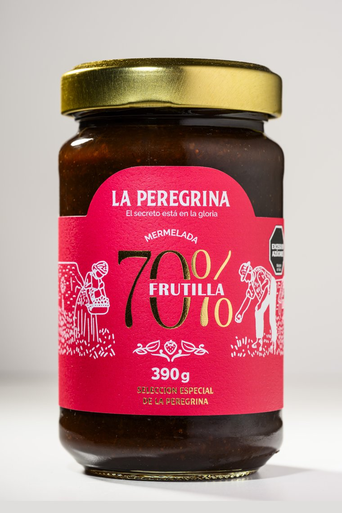
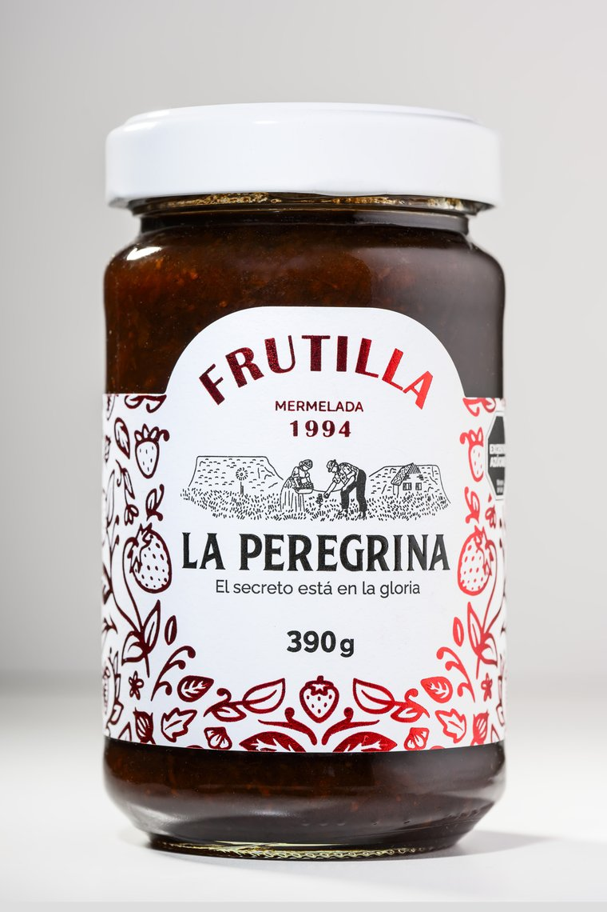
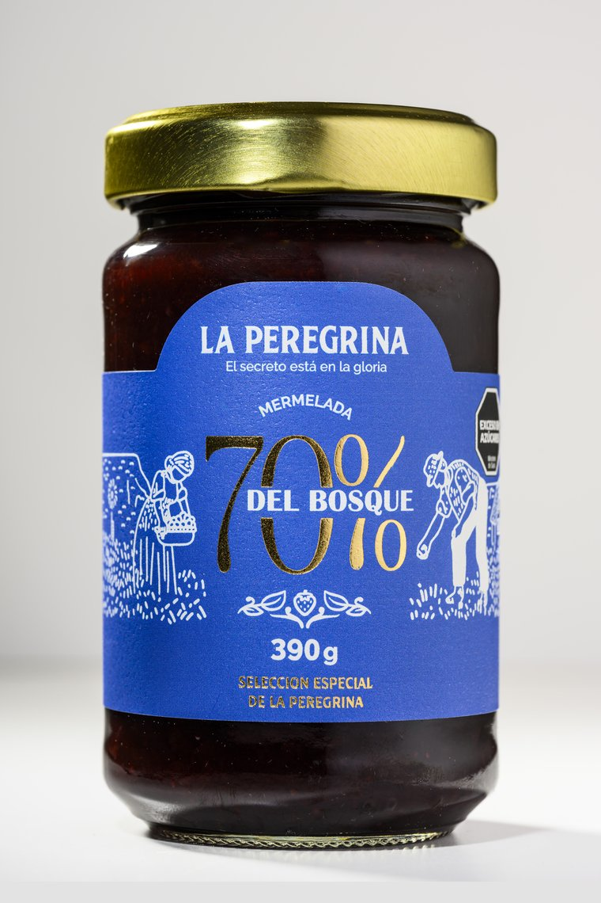
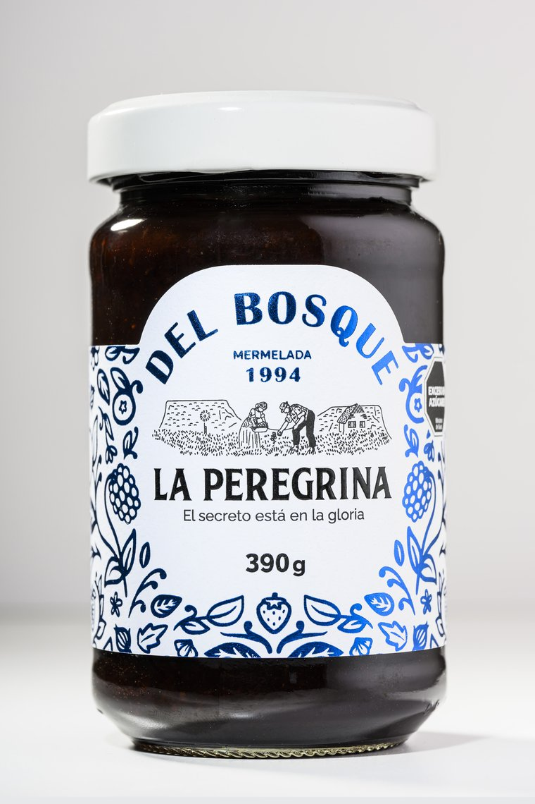
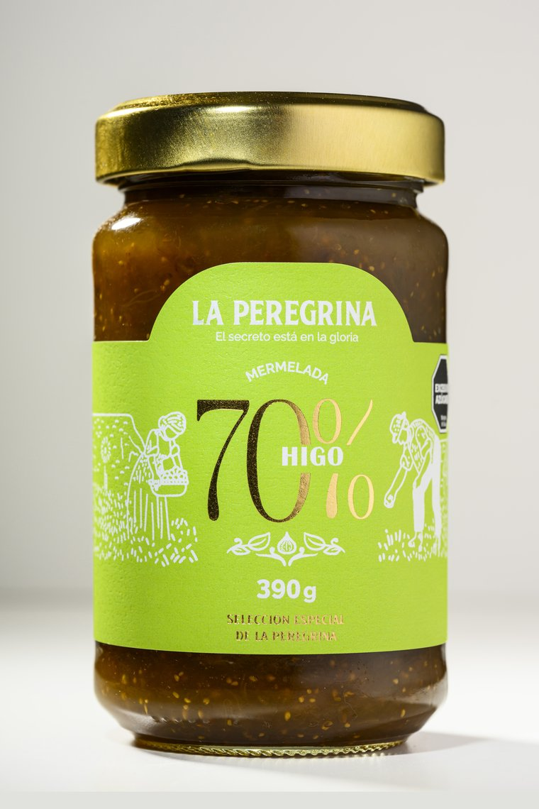
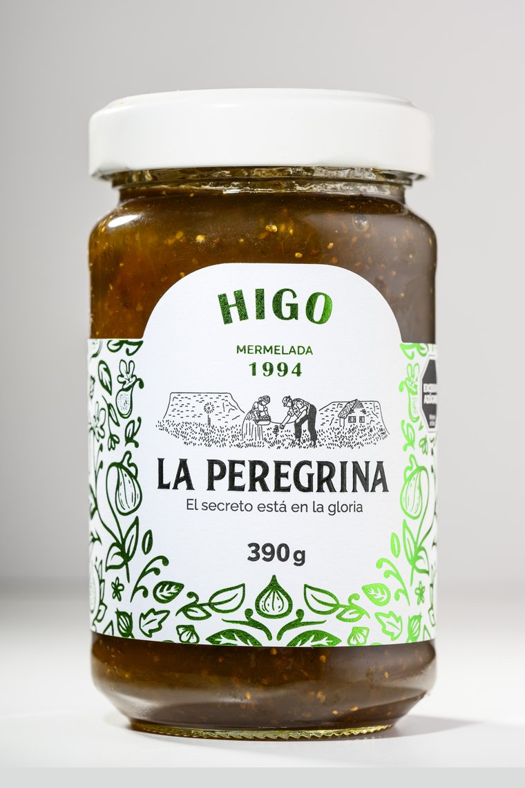
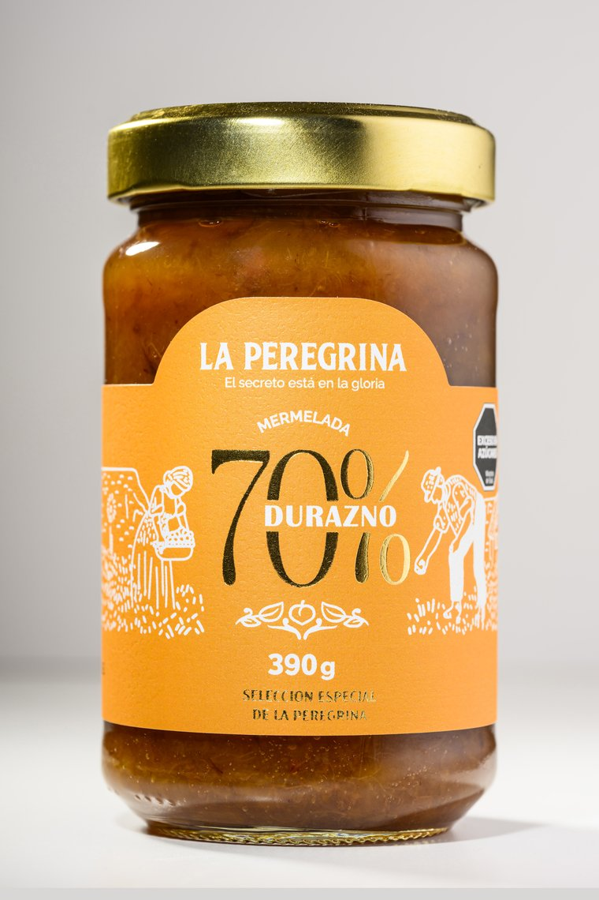
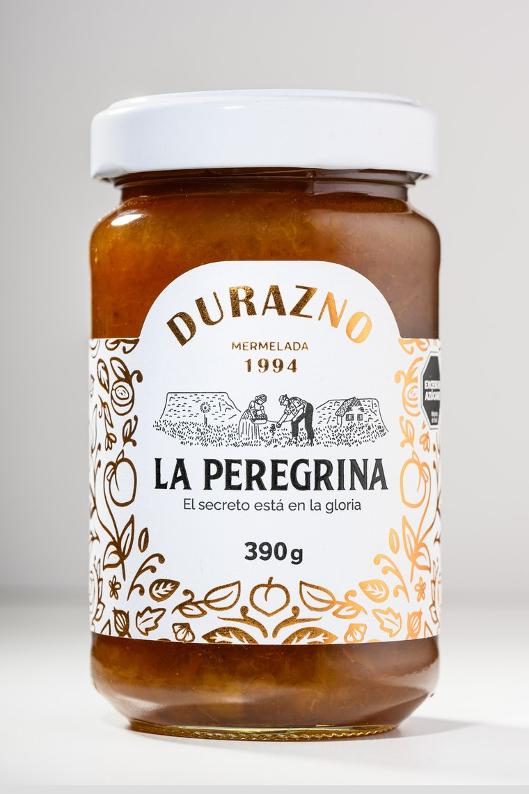
Sabores
Dos líneas, todos los sabores.
Frutilla
Selección Especial · 70%
Durazno
Selección Especial · 70%
Del bosque
Selección Especial · 70%
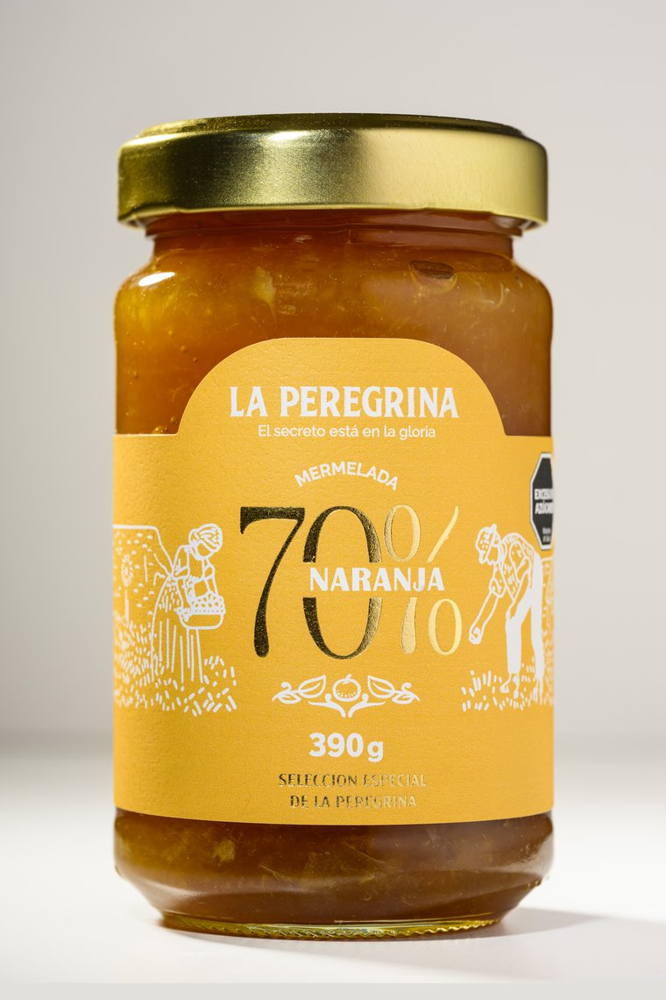
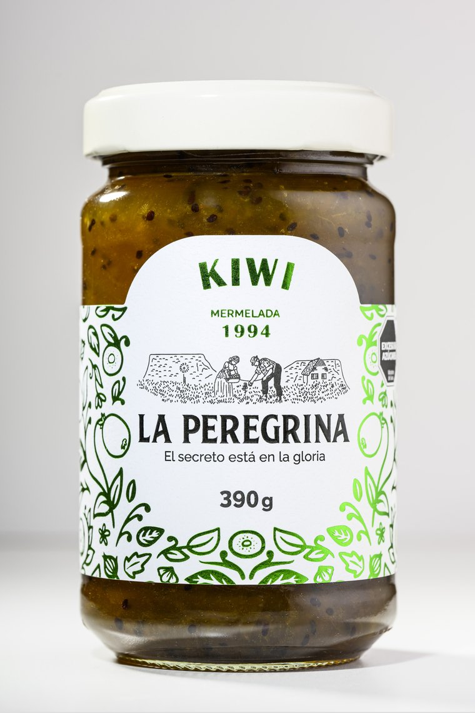
Naranja
Selección Especial · 70%
Higo
Selección Especial · 70%
70%
Más fruta que el resto.
Nuestra Selección Especial se elabora con 70 g de fruta cada 100 g. Te contamos qué significa y por qué se nota.
Qué es el 70%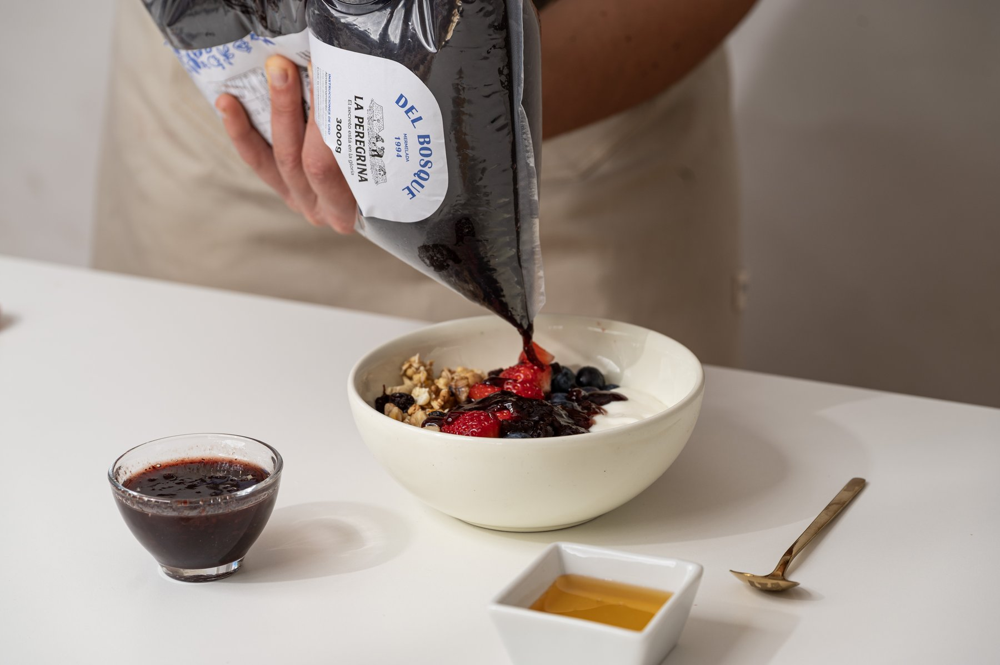
Para gastronomía
En 3 kg, para tu cocina.
Envase de 3 kg con tapa a rosca para cafeterías, panaderías y pastelerías.
Ver la línea gastronómica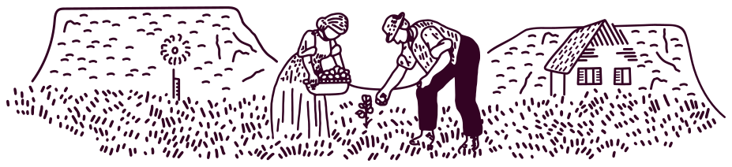
El secreto está en la gloria.
Elaboramos en el paraje La Gloria de la Peregrina, en las sierras de Mar del Plata, desde 1994.
Conocé nuestra historia